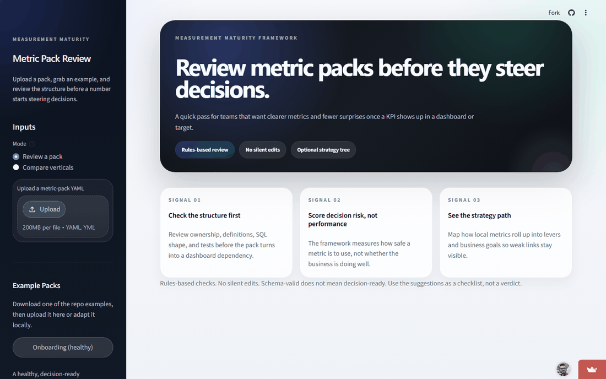

Measurement Maturity Framework
A decision-readiness audit for product metrics. It reports how many of an area's key decisions are backed by trusted, owned, instrumented metrics.

Catching that a metric isn't decision-ready before it drives a decision.
A product area was about to start steering recurring decisions (targets, planning, ship/hold calls) off a set of metrics that looked finished. The dashboards were polished and the numbers were precise.
The instinct in the room was to debate methodology: the right way to define the headline metric. The real risk was structural, not analytical. Some metrics had no clear owner, the SQL lived in someone's notebook rather than anywhere reviewable, and several key decisions weren't backed by a trusted, instrumented metric at all. A polished chart on top of an unowned, untested definition is how a wrong number reaches a board deck before anyone notices.
I ran the area through a decision-readiness audit instead of a methodology debate: model it as a measurement graph (metrics, the decisions they feed, the guardrails, the instrumentation, the ownership and review rhythm) and report the decision-centric result, meaning how many of this area's key decisions are backed by trusted, owned, instrumented metrics, reported as a band rather than a false-precise score. The audit counted problems as orphaned metrics, missing owners, and decisions with no metric, not as a metric tally.
The team stopped arguing definitions and fixed the cheap structural gaps first: ownership, written-down SQL, basic tests. The readiness gaps got closed while they were still cheap, instead of surfacing live in a planning meeting.
Next time I'd run the audit at the start of the planning cycle, before the metrics were wired into targets.